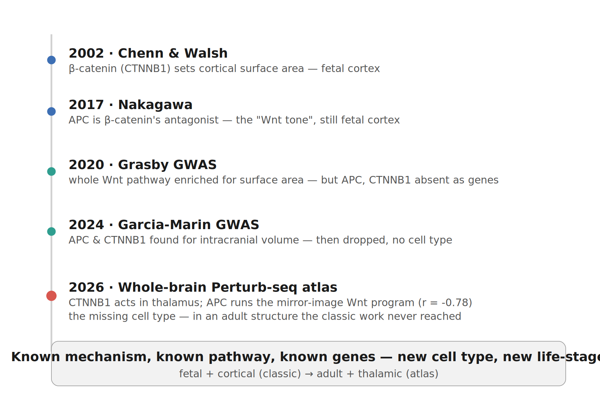
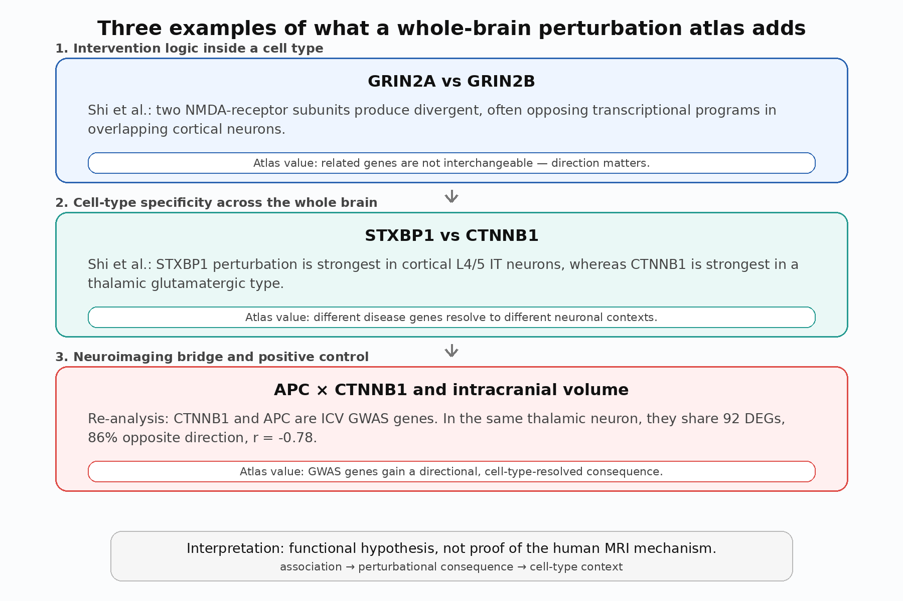
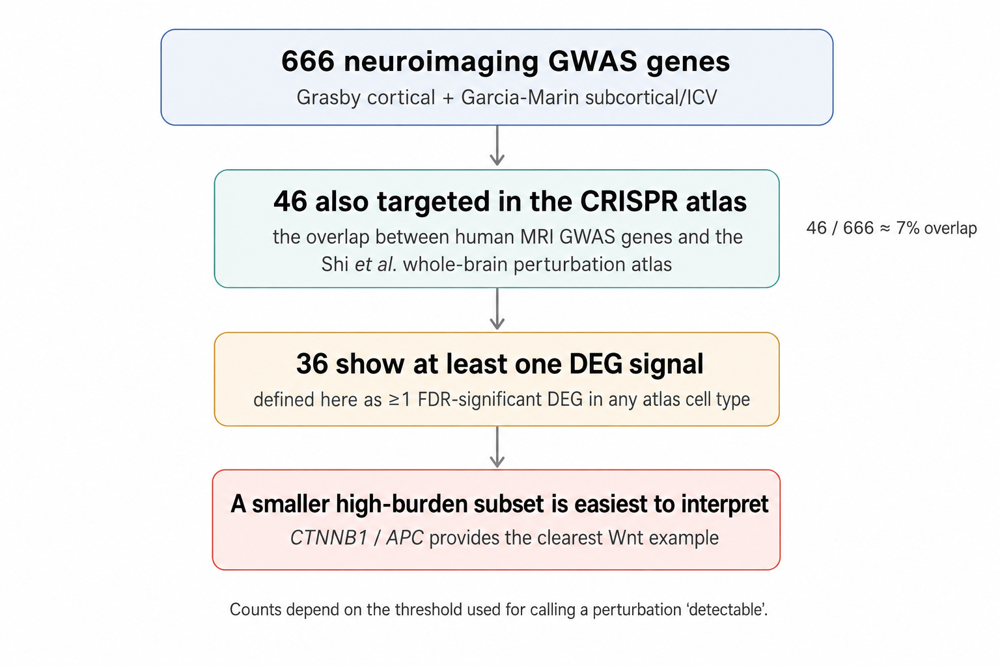
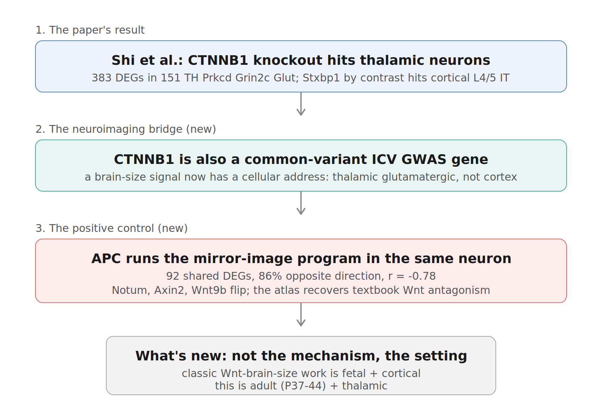

A whole-brain CRISPR atlas meets neuroimaging genetics.
Background: Wnt signalling pathway and developmental neuroscience
In 2002, Anjen Chenn and Christopher Walsh ran one of the key experiments in developmental neuroscience. They engineered mice to express a stabilized form of β-catenin — the central protein of the Wnt signalling pathway, encoded by CTNNB1 — in neural precursor cells. The precursor pool kept dividing instead of differentiating, and the mice grew enlarged brains with increased cortical surface area and folds resembling the sulci and gyri of higher mammals (Chenn & Walsh, Science 2002). β-catenin, they argued, is a switch telling a precursor whether to keep cycling or become a neuron — and through that switch, it helps set cortical size.
The loss-of-function side fits the same logic: removing β-catenin from cortical precursors pushes them toward premature differentiation (Woodhead et al., J Neurosci 2006). β-catenin also does not act alone. Its level is held down by APC, a core component of the destruction complex that targets β-catenin for degradation. This balance matters for the brain: deleting APC from cortical progenitors increases β-catenin signalling and disrupts cortical formation, and reducing β-catenin in those APC-null cells partially rescues the phenotype (Nakagawa et al., Genes & Development 2017).
APC and β-catenin are therefore a matched pair of opposing forces. Their balance — the Wnt “tone” — shapes cortical development. But the classic story is very specific: fetal cortical progenitors. Dividing cells. Embryonic cortex. Hold that thought.

The point is not that Wnt biology is new. The point is where a new perturbation atlas now sees that logic.
Neuroimaging genetics: GWAS catches the pathway — but not the players
Fast-forward. Human genetics catches up to this developmental biology at population scale.
Grasby et al. (2020) ran a large GWAS of cortical structure and found, in pathway analyses, that Wnt signalling is enriched for cortical surface area — including KEGG Wnt signalling at p = 7.3 × 10−9 in their Supplementary Table 10. This is the population-scale echo of the developmental mouse work: Wnt biology is related to cortical surface area.
But this is a pathway-level signal. At the individual-gene level, the core Wnt antagonists are not the story. In Grasby’s significant MAGMA gene table, APC and CTNNB1 are absent; so are other canonical Wnt components such as AXIN1/2, GSK3B, TCF7L2, and LEF1. So the pathway is visible, but the central players from the developmental experiments are not individually nominated as cortical surface-area genes.
Then, in 2024, the two players surface somewhere else. Garcia-Marin and colleagues performed a GWAS of intracranial and subcortical volumes. In their significant MAGMA gene table, CTNNB1 and APC both appear for intracranial volume (ICV), not cortical surface area. Two Wnt antagonists, both nominated by common variants for brain size.
Importantly, they are not carried forward by that paper’s main mechanistic follow-up layers. I checked the Garcia-Marin supplement gene by gene: CTNNB1 and APC appear in Supplementary Table 5, but neither appears in the significant TWAS table, the developmental eQTL table, or the single-cell integration table. This is not a criticism of the GWAS paper; it is exactly the gap that association studies often leave. The genes are associated with a brain MRI trait, but the supplement does not tell us what happens when the genes are perturbed, which cell type is most affected, or whether the two genes push biology in opposite directions.
So by 2024, the situation was oddly satisfying and frustrating at the same time: the pathway was known, the genes were nominated for ICV, but the cellular consequence was still missing.
Enter Perturb-seq map of the entire mammalian brain, that has never existed before
Shi et al. (2026) built a genome-scale, in-vivo Perturb-seq map of the mouse brain. The scale is worth pausing on: 1,947 disease-relevant genes targeted with CRISPR, 7.7 million postnatal mouse brain nuclei profiled by single-nucleus RNA-seq, and perturbation effects mapped across major neuronal populations and brain regions. This is not an expression atlas and not a correlation study. It asks a different question: what happens to a specific cell type when a specific gene is lost?
The paper’s own examples show why this matters.
First — intervention logic. Grin2a and Grin2b encode closely related NMDA-receptor subunits. The atlas shows that perturbing the two genes can produce divergent, even directionally opposing, transcriptional programs in overlapping cortical glutamatergic neurons. That is a distinction a static expression atlas cannot make: related genes can have different downstream consequences.
Second — cell-type specificity. The paper contrasts Stxbp1 and Ctnnb1. Stxbp1, a synaptic vesicle release gene, has its strongest perturbation burden in cortical L4/5 IT neurons. Ctnnb1, the Wnt effector, has its strongest signal in a thalamic glutamatergic type. The resource therefore does not just say “this is a disease gene”; it gives each gene a cellular context and a downstream transcriptional program.

The first two layers are the Shi et al. logic; the third is the neuroimaging bridge from re-analysis.
Perturb-seq map of the entire mammalian brain meets human neuroimaging genetics
My question was simple. We have hundreds of genes that human GWAS links to brain structure. This atlas perturbed nearly two thousand disease-relevant genes. Where do the two sets meet, and what does the atlas add?
The broad overlap is useful, but it is not yet a complete biological story. I found 666 unique significant neuroimaging-GWAS genes across Grasby cortical structure and Garcia-Marin ICV/subcortical volume. Of these, 46 were also targeted in the Shi atlas. Using the raw S6A differential-expression table and defining a signal as at least one FDR-significant DEG in any atlas cell type, 36 of those 46 showed at least one detectable DEG. But this is not the same as saying 36 genes have interpretable neuroimaging mechanisms. Many are broad regulators, many have very small or single-cell-type DEG counts, and several have independent mechanistic clues already in the Garcia-Marin supplement: for example, among the 46 overlap genes, CRHR1 and TBX6 appear in the Garcia-Marin TWAS table, KANSL1 appears in the developmental eQTL table, and CRHR1 appears in the single-cell integration table.
I do not think “the atlas explains all MRI GWAS genes.” It does not. The impact story is narrower: the atlas provides a particularly interpretable perturbational bridge for the APC–CTNNB1 Wnt pair, precisely because those two genes are biologically paired, both are ICV MAGMA genes, neither is resolved by the Garcia-Marin mechanistic follow-up tables, and their perturbation effects can be tested against known Wnt antagonism.

The overlap is a starting point, not a mechanism. The APC–CTNNB1 pair is the cleanest example because it has an internal biological positive control.
What the Perturb-seq map of the entire mammalian brain brings to the table
CTNNB1 is one of the ICV genes from Garcia-Marin. Shi et al. highlight Ctnnb1 because its perturbation is unusually cell-type-specific: in the S6A differential-expression table, Ctnnb1 has 383 FDR-significant DEGs in one thalamic glutamatergic type, labelled “151 TH Prkcd Grin2c Glut,” and very little elsewhere. In the authors’ S6B potency summary, Ctnnb1 is also assigned to the signalling/metabolism group, with its top affected cell type in the same thalamic population.
That already gives the ICV association something the GWAS supplement did not: a plausible cellular context. But the more useful test is whether the atlas recovers known pathway directionality.
In the same thalamic glutamatergic neuron, Apc — the β-catenin antagonist, and also an ICV MAGMA gene — shows the mirror-image program. Re-analysing the S6A DEG table, I find 92 genes differentially expressed after both Apc and Ctnnb1 perturbation in this cell type; 86% move in opposite directions; and the gene-level Pearson correlation of log-fold changes is −0.78. Canonical Wnt targets behave as expected: Notum, Axin2, and Wnt9b go up when Apc is lost and down when Ctnnb1 is lost, while Fzd8 moves the other way.

This is the key point: the atlas does not discover that APC and β-catenin antagonize each other. That is textbook Wnt biology. Instead, the atlas recovers that antagonism, in the right direction, inside a specific postnatal thalamic neuron. That makes the APC–CTNNB1 pair a useful positive control. It tells us that this perturbation resource can recover known pathway logic in vivo, while also giving GWAS-nominated genes a cell-type-resolved consequence.
Remarkable — and here's exactly why
The Walsh–Nakagawa mechanism is not new. Wnt signalling and APC/β-catenin antagonism are not new. The interesting part is the setting.
The classic work is fetal and cortical: progenitors expanding the cortex before birth. The Shi atlas is postnatal and neuronal: P37–P44 mouse brain nuclei, enriched for NeuN-positive cells. The APC–CTNNB1 antagonism appears not in a fetal cortical progenitor, but in a thalamic glutamatergic neuron. That does not prove the human ICV association acts through that neuron. It does show that a pathway known for cortical development has a measurable, sign-opposed perturbational footprint in a different cell type and life stage.
That is exactly the value of the resource for human neuroimaging genetics. GWAS gives association. Pathway analysis gives enrichment. TWAS/eQTL/single-cell integration can suggest regulatory intermediates. But an in-vivo perturbation atlas adds a different layer: directional consequence. It can show whether two genes in the same pathway push the transcriptome in the same direction, in opposite directions, or in completely different cell types.
The pinch of salt
That convergence is exciting. It also needs to be held at arm’s length.
Species. This is a mouse atlas. Some neuronal identities and gene programs are conserved across mammals, but human cortex has expanded and specialized in ways that make direct translation fragile. Cross-species comparisons of brain cell types — for example, work from the Allen Brain Cell Atlas ecosystem and human/mouse/marmoset comparative studies — are essential before treating a mouse cell-type assignment as a human mechanism.
Timepoint. The atlas reads postnatal P37–P44 neurons. The classic brain-size mechanism lives in fetal cortical progenitors. Therefore the thalamic Ctnnb1/Apc signal could be part of the ICV biology, an adult/postnatal echo of a developmental pathway, or simply the cell type in which this perturbation is most measurable. The atlas cannot distinguish these possibilities on its own.
Cell-type and region bias. A whole-brain single-cell perturbation assay is not neutral with respect to region, abundance, expression, viral tropism, or statistical power. The Shi atlas itself notes constraints from AAV tropism, NeuN enrichment, a single timepoint, and RNA-seq-only readouts. More generally, whole-brain transcriptomic variation is strongly structured by region and cell type; a DEG-burden metric may favor broad, high-expression, or subcortically detectable programs over subtle within-cortex developmental effects.
The overlap is not the mechanism. Of the 46 MRI GWAS genes targeted in the atlas, 36 have at least one FDR-significant DEG in S6A, including several cortical surface-area genes. So it would be wrong to say that cortical GWAS genes are silent. The better conclusion is that many overlap genes have some perturbational signal, but only a smaller subset gives a high-burden, interpretable, biologically constrained story. APC–CTNNB1 is one such case because the pair has a known antagonistic relationship.
And this particular result is my own re-analysis. The APC–CTNNB1 correlation is computed from Supplementary Data S6A. It is not a claim made in the Shi manuscript. It is reassuring because it recovers known Wnt directionality, but the analysis should be independently re-run before anyone leans on the exact numbers.
Silent does not mean unimportant. A gene can be quiet in this assay because it is redundant, lowly expressed in mouse, active in the wrong developmental window, poorly sampled in a relevant cell type, or invisible to RNA-seq despite a morphological effect.
What this opens up
Held carefully, the finding is less an answer than a sharper question.
Timing. Is the relevant brain-size biology fetal, postnatal, or both? An earlier developmental perturbation atlas would be the clean test. If the classic Wnt mechanism is the route from CTNNB1/APC to brain size, an embryonic or early postnatal screen should recover a stronger cortical progenitor signal.
Cell-type localization. Why thalamus? Is the postnatal thalamic Wnt program a functional role, a developmental remnant, or a measurement bias? Human whole-brain single-cell atlases such as Siletti et al. (2023), and cross-species reference atlases such as Yao et al. and Bakken et al., provide obvious next checks.
Spatial localization beyond pathway. Grasby tells us Wnt biology is relevant to cortical surface area. Garcia-Marin nominates CTNNB1 and APC for ICV. The perturbation atlas tells us where loss of these genes produces a transcriptional consequence. None of these alone tells us which anatomical structure changes in response to perturbation. The next bridge is perturbation plus morphology: gene perturbation, cell-type consequence, and brain-structure phenotype in the same experimental frame.
What would need to be done
The honest shortlist is clear: an earlier-developmental whole-brain perturbation atlas; within-cortex analyses or cortex-sensitive perturbation metrics; cross-validation against human whole-brain single-cell references; and eventually perturbation joined to imaging or morphology. None is trivial. But this is exactly what makes the Shi resource so valuable. It does not end the story; it defines the next experiment.
A remarkable resource
For neuroimaging genetics, this atlas is a new kind of instrument. GWAS tells us that a gene is linked to a trait. Pathway analysis tells us that a biological process is enriched. Single-cell expression tells us where a gene is normally expressed. Perturb-seq asks what happens when the gene is gone.
The APC–CTNNB1 example is narrow, but that is its strength. It connects a classic developmental mechanism, a pathway-level cortical GWAS signal, an ICV gene-level GWAS signal, and a new postnatal whole-brain perturbation readout. The result is not proof of a human mechanism. It is a functional hypothesis with an internal positive control: known Wnt antagonism recovered in the right direction, in vivo, at cell-type resolution.
That is the unique value of the atlas. It can turn a gene in a GWAS table into a perturbational consequence. For a field full of associated genes waiting for biological interpretation, that is a very big deal.
Notes on data and methods
- Reference: Shi et al. (2026, bioRxiv 2026.03.16.711480), Genome-scale functional mapping of the mammalian whole brain with in vivo Perturb-seq.
- The Perturb-seq resource: Genome-scale, whole-brain, in-vivo Perturb-seq; 1,947 target genes and 7.7M postnatal mouse brain nuclei. Per-cell-type Wilcoxon DEGs were taken from Supplementary Data S6A; potency summaries from S6B; gene-level annotations and disorder annotations from S9.
- Neuroimaging GWAS: Grasby et al. (2020, Science) for cortical surface area/thickness; Garcia-Marin et al. (2024, Nature Genetics) for ICV and subcortical volumes.
- Overlap audit: 666 unique neuroimaging-GWAS genes from Grasby ST6 and Garcia-Marin ST5; 46 overlap with Shi perturbation targets; 36 have at least one FDR < 0.05 DEG in S6A. Among the 46 overlap genes, Garcia-Marin mechanistic follow-up tables contain CRHR1 and TBX6 in TWAS, KANSL1 in developmental eQTL, and CRHR1 in single-cell integration. APC and CTNNB1 are absent from those three follow-up tables.
- APC–CTNNB1 re-analysis: In cell type “151 TH Prkcd Grin2c Glut,” Apc and Ctnnb1 share 92 FDR-significant DEGs; 86% move in opposite directions; Pearson r = −0.78 across shared log-fold changes. This is my analysis of S6A, not a claim made by the Shi manuscript.
- Classic Wnt references: Chenn & Walsh (2002, Science 297:365–369); Woodhead et al. (2006, J Neurosci 26:12620–12630); Nakagawa et al. (2017, Genes & Development 31:1679–1692).
- Caveat references: Siletti et al. (2023, Science) for human whole-brain cell-type diversity; Yao et al. (2023, Nature) for whole-mouse-brain cell taxonomy; Bakken et al. (2021, Nature) for cross-species cortical cell-type comparisons; Nowakowski et al. (2017, Science) and Polioudakis et al. (2019, Neuron) for human cortical developmental cell states.
- Note: Exploratory blog post, not peer-reviewed. Corrections and feedback welcome.